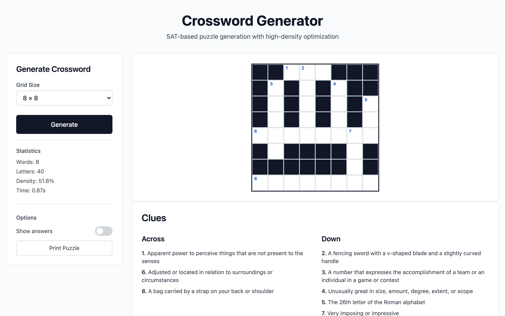
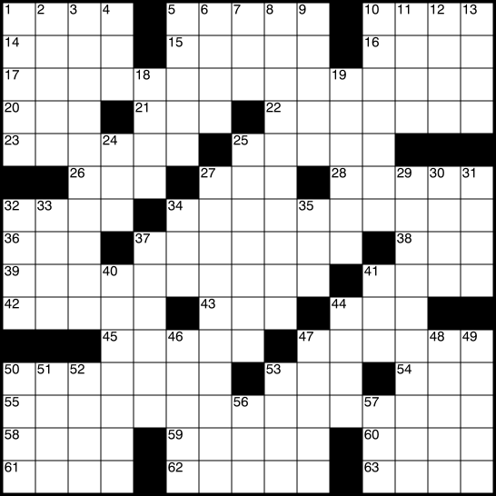
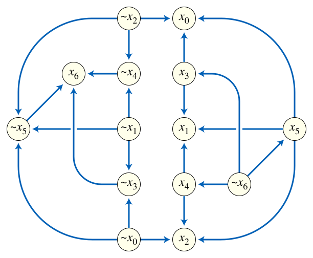

This project started because I noticed crossword puzzle books selling well on Amazon KDP and thought the whole process could be automated. Not just the puzzle generation, but the entire pipeline: valid high-density grids, clue extraction, page layout, front matter, covers, spine width calculation, print-ready PDF output. One command, one book.
The browser demo on GitHub Pages came later and is really a side effect. The primary output is a CLI tool that produces KDP-ready LaTeX books.
Why SAT solving

{kind=link}
I looked at existing open-source crossword generators before writing my own. Most of them use backtracking search: pick a word, place it, pick another, check if it fits, undo and retry when it doesn't. These generators work for small grids but they tend to get stuck in local optima, producing puzzles that are sparse and uneven. The grids have dead zones where no words interlock, and the word choices feel like afterthoughts jammed into remaining gaps.
Crossword construction is a constraint satisfaction problem. Every cell in the grid is a variable with domain \(\{A, B, \ldots, Z, \text{black}\}\). Every word placement creates letter-equality constraints between intersecting slots: if an across word and a down word share cell \((r, c)\), their respective characters at that position must agree. The requirement that all words come from a valid dictionary constrains each slot to a finite set of letter sequences. This maps naturally to Boolean satisfiability (SAT).
The SAT encoding
The encoder introduces Boolean variables \(x_{r,c,\ell}\) meaning "cell \((r, c)\) contains letter \(\ell\)," where \(\ell \in \{A, B, \ldots, Z, \blacksquare\}\). For each cell, an exactly-one constraint enforces that precisely one value is assigned:
\[\sum_{\ell} x_{r,c,\ell} = 1 \qquad \forall\; (r, c) \in \text{grid}\]This is encoded in CNF as an at-least-one clause \((x_{r,c,A} \lor x_{r,c,B} \lor \cdots)\) plus pairwise at-most-one clauses \((\neg x_{r,c,\ell_i} \lor \neg x_{r,c,\ell_j})\) for all \(i \neq j\). For an \(n \times n\) grid with 27 possible values per cell, this produces \(27n^2\) variables and \(n^2 \binom{27}{2} = 351\, n^2\) mutual-exclusion clauses just for the cell assignments.
For each slot (a maximal contiguous run of non-black cells), the encoder generates clauses asserting that the letter sequence matches some word in the dictionary. If slot \(s\) has length \(k\) and the dictionary contains \(m\) words of length \(k\), each word \(w = w_1 w_2 \cdots w_k\) contributes the implication: "if slot \(s\) uses word \(w\), then \(x_{s_1, w_1} \land x_{s_2, w_2} \land \cdots \land x_{s_k, w_k}\)." The disjunction over all valid words for each slot is the dictionary constraint.
Intersection constraints between crossing slots are the key structural feature. If an across slot and a down slot share cell \((r, c)\), with the across slot at position \(i\) and the down slot at position \(j\), then for every letter \(\ell\):
\[x_{\text{across}, i, \ell} \;\leftrightarrow\; x_{\text{down}, j, \ell}\]These biconditionals, encoded as pairs of implications in CNF, are what make crossword generation hard: they couple slots together, creating a web of dependencies that propagates constraints across the grid. The density target adds cardinality constraints on the total number of black cells.

{kind=link}
CDCL solving
The resulting formula is in conjunctive normal form (CNF) and is solved by Varisat, a Rust CDCL solver. CDCL extends basic DPLL with three key techniques:
Unit propagation. If a clause has all but one literal set to false, the remaining literal must be true. This cascades: setting one variable can force dozens of others, rapidly pruning the search space. In crossword terms, if a slot has been narrowed to a single compatible word, all its letter assignments become forced.
Conflict-driven clause learning. When the solver reaches a contradiction (an unsatisfiable clause), it traces the implication graph backward to find the set of decisions that caused the conflict, learns a new clause that prevents the same combination from recurring, and backtracks to the earliest relevant decision level. This is non-chronological backtracking: the solver can skip many decision levels at once.
Variable selection heuristics. VSIDS (Variable State Independent Decaying Sum) scores each variable by how often it appears in recently learned clauses, focusing the search on the most constrained parts of the formula. For crosswords, this tends to prioritize cells at busy intersections.
For a 16x16 grid at 50% density, the formula has roughly 7,000 variables and 100,000+ clauses. Varisat typically finds a solution (or proves unsatisfiability) in under 10 seconds. When the density target is too aggressive for the available word list, the solver proves no valid grid exists rather than running forever.

{kind=link}
Complexity
Crossword construction is NP-complete. The decision problem -- "given this grid shape and this dictionary, does a valid filling exist?" -- can be reduced from 3-SAT. The reduction encodes each Boolean variable as a pair of crossing slots whose intersection cell forces a consistent true/false assignment. This means no polynomial-time algorithm is known for the general case, and SAT solvers are a natural fit: they are engineered precisely for this class of problem.
In practice, the structure of crossword instances is far from worst-case. The constraint graph is sparse (each cell participates in at most two slots), the dictionary heavily prunes each slot's domain, and unit propagation resolves most cells without search. The empirical difficulty correlates with density: at 30% fill, solutions are abundant and found in milliseconds. At 60%+, the solver spends more time in conflict analysis. At very high densities with a small dictionary, the formula is often unsatisfiable, and the solver proves this faster than finding a solution would take if one existed, because learned clauses prune the space aggressively.
The book pipeline
The CLI generates complete LaTeX source for a KDP-ready puzzle book. Each puzzle is laid out on a spread: the grid appears on the left page, the clues on the right, with correct gutters and margins for print binding. Before the puzzles, the tool generates a title page with customizable author name, publisher, and description; a copyright page with ISBN and edition fields; and a table of contents.
Cover generation handles the most tedious part of KDP publishing. The tool calculates spine width from the page count and paper stock (color interior uses thicker paper, so the spine is wider for the same page count), renders an SVG template at the required trim dimensions, and outputs a print-ready cover. Supported trim sizes range from 5x8 to 8x10, covering the most common KDP paperback formats.
Rayon parallelizes the puzzle generation across all available CPU cores. On a modern machine, 100 puzzles at the default 16x16 grid size and 50% density takes about 5 to 10 minutes. Each puzzle uses a deterministic seed, so any individual result can be reproduced exactly.
Dictionary curation
I underestimated how much the word list matters. Early versions used an unfiltered dictionary, and the resulting puzzles contained medical abbreviations, archaic terms nobody would recognize, and occasionally offensive entries. A crossword is only as good as its vocabulary. The project now ships a curated allowlist derived from the WordSet project, filtered for common English words that a typical solver would know. The CLI also accepts custom allowlists, which is useful for themed books (animals, geography, sports) or for targeting a specific difficulty level by restricting vocabulary size.
One codebase, two targets
The core Rust library compiles to WebAssembly for the browser or to a native binary for the CLI, selected by a --features wasm flag during compilation. The encoder, solver integration, dictionary management, and solution representation are shared. The WASM target wraps the library for browser invocation; the native target adds the LaTeX generation, parallel processing, cover rendering, and pdflatex integration. Conditional compilation keeps the separation clean without duplicating logic.